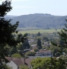

Dennis & Diana Hit 40
On September 4th Dennis and Diana celebrated their 40th wedding anniversary. They commemorated the occasion with two separate mini-breaks; an over-nighter to Crater Lake and a quick trip to San Francisco. As a thematic bonus both Dennis and Diana seem to have made a pact to spend the rest of their lives driving at 40 MPH (rather than 65 MPH) on the freeway--or maybe it's just old age setting in! Happy anniversary Mom and Dad, and may you have 40 more fantastic years together!
Jasmine Takes the Plunge
Jasmine Cluff, who turns eight on the 23rd of October, has decided to get baptized the Sunday following her birthday. She is happy about the prospect of becoming a fully-fledged member of the church and is looking forward to exercising all of her new privileges. When asked which privilege Jasmine was looking forward to the most, she responded with: "fasting!"
New Callings
Both Dane and Karen have been sentenced...or rather...called to new positions in their ward. Dane will be serving as ward clerk, while Karen will be handling the entire primary as their new President. Good luck!
Coolboarders
Indian summer has provided a few extra opportunities for 11 year old twins Dallas and Weston to perfect their wakeboarding skills this year. Weston can jump the wake now and Dallas, who prefers knee boarding, is getting close. Despite the unseasonably warm weather, both are looking forward to snow skiing season and have already purchased their season passes (winter sports enthusiasts beware!). Having already perfected their skiing technique (or so they say) the boys are now hoping their wakeboarding skills will help them make the smooth transition to snowboarding this winter. Mt. Ashland has said that they will be issuing warnings to all skiers who might potentially be in the path of the inexperienced snowboarding duo.
Dakota-on-a-Rope
Dakota, age eight, has finally managed to climb to the top of the 50 foot rope in the Cluff family playground. After repeated attempts over a three month period he has finally developed the upper body strength necessary to complete the feat. The only hurdle now is his dismount; rope-burn continues to be a problem for him in this area. But he's not giving up and has vowed to conquer the rope once and for all--once the bandages come off.
Un-Caged Enthusiasm
 Cage Cluff has taken to the sport of motorcross in a big way. Cage, age nine, already has experience riding a 50cc and 80cc and hopes to get one of her own to practice on soon. "This quest for a motorcycle is beginning to develop into an obsession," says Cage's mother, Natasha. "Cage has become seriously capitalistic and started creatively saving up money for a motorcycle. She already has more than $50.00 accumulated from odd jobs and chores." Cage is pro-active in her quest by working for neighbors who pay out big cash for yard work and small chores. At his rate, Cage will have earned her first motorcycle by her next birthday.
Cage Cluff has taken to the sport of motorcross in a big way. Cage, age nine, already has experience riding a 50cc and 80cc and hopes to get one of her own to practice on soon. "This quest for a motorcycle is beginning to develop into an obsession," says Cage's mother, Natasha. "Cage has become seriously capitalistic and started creatively saving up money for a motorcycle. She already has more than $50.00 accumulated from odd jobs and chores." Cage is pro-active in her quest by working for neighbors who pay out big cash for yard work and small chores. At his rate, Cage will have earned her first motorcycle by her next birthday.
A Seasonal Joke
Q. Why don't skeletons fight each other?
A. They don't have the guts.
|
|
Wedding Bells Are Ringing! And no, Shira hasn't changed her mind and decided to get married again, this time the wedding plans are for her older sister, Daisha. After more than a decade of diligently dodging marriage proposals and repeatedly spurning prospective fianc�es, last month 29 year old Daisha finally surrendered! Her long suffering boyfriend, Edward Lanyon, is British and works for an investment bank in London. They met in the UK while Daisha was backpacking through Europe in the summer of 2000. About a year later Daisha moved to England to finish her degree in Media and to be near Edward. She stayed in London for more than two years but after graduating, Daisha moved back to the Cluff Homestead in Ashland. Two months later Edward bravely flew out from London to take his chances with a marriage proposal. He took her to Lithia Park for a picnic with a beautiful British hamper he'd filled with all of her favorite treats from England. He found a beautiful, sunny spot by the stream and they settled down with their picnic. Edward turned on the charm and pulled out a box with a handmade ring he'd carved from a piece of oak (a temporary semblance until she could choose the ring she wanted) and asked her to marry him. She said yes. "I was actually pretty shocked when he asked me," says Daisha. "I had an inkling that he'd been gearing up for it, but I didn't think he'd ask me in the state I was in that day--I'd just been remodeling a room in my parent's house and was wearing grubby, painted-on jeans and my brother's old shirt. I wasn't exactly a picture of loveliness. But it was so sweet and he was so cute with everything. When he proposed he said something like, 'It can't have escaped your notice that I've grown quite fond of you over the past three years...' My heart was pounding like crazy. Then he told me how he couldn't imagine life without me and asked me to stay with him forever and be his wife. He was so adorable, I had to accept." "We're all stunned that Daisha actually accepted a proposal," says a shocked sibling. "She's got that whole 'fight or flight' thing going on. She's very feisty and fights with or dumps all her boyfriends. For years she's dumped men for the silliest reasons. Once she even dumped a guy because he preferred baths over showers!" Daisha's mother, Diana, agrees, "I'd kissed her off as an old-maid, I didn't think anyone would ever get Daisha to say 'yes' to marriage. Many had tried. But Edward put up with Daisha for three years of total devotion and finally won her over. Now the world is his! Whatever he wants to do, he can do it because there can be no bigger conquest than taming Daisha." So how did Edward get a feisty, commitma-phobe like Daisha to finally succumb to the idea of a lifetime of monogamy? "I expect it was my devastating good looks..." says Edward mischievously "or maybe it's just my aversion to baths." The couple plans to be married June 5th in a quaint 800 year old country chapel outside London. There will be a small English reception immediately following the ceremony and a big American reception in Ashland on the 3rd of July.
And no, Shira hasn't changed her mind and decided to get married again, this time the wedding plans are for her older sister, Daisha. After more than a decade of diligently dodging marriage proposals and repeatedly spurning prospective fianc�es, last month 29 year old Daisha finally surrendered! Her long suffering boyfriend, Edward Lanyon, is British and works for an investment bank in London. They met in the UK while Daisha was backpacking through Europe in the summer of 2000. About a year later Daisha moved to England to finish her degree in Media and to be near Edward. She stayed in London for more than two years but after graduating, Daisha moved back to the Cluff Homestead in Ashland. Two months later Edward bravely flew out from London to take his chances with a marriage proposal. He took her to Lithia Park for a picnic with a beautiful British hamper he'd filled with all of her favorite treats from England. He found a beautiful, sunny spot by the stream and they settled down with their picnic. Edward turned on the charm and pulled out a box with a handmade ring he'd carved from a piece of oak (a temporary semblance until she could choose the ring she wanted) and asked her to marry him. She said yes. "I was actually pretty shocked when he asked me," says Daisha. "I had an inkling that he'd been gearing up for it, but I didn't think he'd ask me in the state I was in that day--I'd just been remodeling a room in my parent's house and was wearing grubby, painted-on jeans and my brother's old shirt. I wasn't exactly a picture of loveliness. But it was so sweet and he was so cute with everything. When he proposed he said something like, 'It can't have escaped your notice that I've grown quite fond of you over the past three years...' My heart was pounding like crazy. Then he told me how he couldn't imagine life without me and asked me to stay with him forever and be his wife. He was so adorable, I had to accept." "We're all stunned that Daisha actually accepted a proposal," says a shocked sibling. "She's got that whole 'fight or flight' thing going on. She's very feisty and fights with or dumps all her boyfriends. For years she's dumped men for the silliest reasons. Once she even dumped a guy because he preferred baths over showers!" Daisha's mother, Diana, agrees, "I'd kissed her off as an old-maid, I didn't think anyone would ever get Daisha to say 'yes' to marriage. Many had tried. But Edward put up with Daisha for three years of total devotion and finally won her over. Now the world is his! Whatever he wants to do, he can do it because there can be no bigger conquest than taming Daisha." So how did Edward get a feisty, commitma-phobe like Daisha to finally succumb to the idea of a lifetime of monogamy? "I expect it was my devastating good looks..." says Edward mischievously "or maybe it's just my aversion to baths." The couple plans to be married June 5th in a quaint 800 year old country chapel outside London. There will be a small English reception immediately following the ceremony and a big American reception in Ashland on the 3rd of July.
Announcement: Two New Arrivals on the Way Cluff sisters Melanie, 33, and Tiana, 27, have both just announced that they are pregnant and due in the spring (Melanie in March and Tiana in May). This will be Melanie and husband Scott's third baby and Tiana and husband Hyrum's first baby. "We've been married for almost 3 years now without any success in the pregnancy department," says an elated Tiana, "so when we found out about this pregnancy, we couldn't believe it was true--even after taking 5 pregnancy tests!" Both women are doing very well and feel great. Amazingly, Melanie even reports feeling more energetic pregnant than when she's not pregnant. Tiana feels good too. "I've had no nausea or other typical symptoms," says Tiana "aside from slight exhaustion and major ice cream cravings." Both Melanie and Tiana say that they are very happy and don't mind whether they have a boy or girl--just as long as there's only one (twins run in the family). See Tiana's update page for more info.
Cluff sisters Melanie, 33, and Tiana, 27, have both just announced that they are pregnant and due in the spring (Melanie in March and Tiana in May). This will be Melanie and husband Scott's third baby and Tiana and husband Hyrum's first baby. "We've been married for almost 3 years now without any success in the pregnancy department," says an elated Tiana, "so when we found out about this pregnancy, we couldn't believe it was true--even after taking 5 pregnancy tests!" Both women are doing very well and feel great. Amazingly, Melanie even reports feeling more energetic pregnant than when she's not pregnant. Tiana feels good too. "I've had no nausea or other typical symptoms," says Tiana "aside from slight exhaustion and major ice cream cravings." Both Melanie and Tiana say that they are very happy and don't mind whether they have a boy or girl--just as long as there's only one (twins run in the family). See Tiana's update page for more info.
Halloween
 Each year Halloween is a wild ride at the Cluff House. To see how we like to celebrate head to the Halloween section of the Family Traditions page. This year the Cluff family had more than just teenage vandalism to look forward to. The Twins, Dakota and even 15 year-old Nial went trick-or-treating Halloween night with varying results. The three youngest boys hit local haunt Oak Knoll for two hours and came home with a hefty pillowcase full of sugary treasure which was plundered by their mother in a scheme she called "tithing" wherein 85% of their haul was collected for reuse at Christmastime. What a jip! Nial, who didn't want to hang with the boys, allegedly roamed the hills above the park for four plus hours only to come back with a handful of candy, which has led his family to suspect that there was more 'trick' than 'treat' in Nial's Halloween adventure (the trick being a 16 year old girl named Morgan). Other festivities included the annual Bellview carnival, the church carnival and a few private soir�es interspersed throughout. All in all, a frightfully good time was had by all.
Each year Halloween is a wild ride at the Cluff House. To see how we like to celebrate head to the Halloween section of the Family Traditions page. This year the Cluff family had more than just teenage vandalism to look forward to. The Twins, Dakota and even 15 year-old Nial went trick-or-treating Halloween night with varying results. The three youngest boys hit local haunt Oak Knoll for two hours and came home with a hefty pillowcase full of sugary treasure which was plundered by their mother in a scheme she called "tithing" wherein 85% of their haul was collected for reuse at Christmastime. What a jip! Nial, who didn't want to hang with the boys, allegedly roamed the hills above the park for four plus hours only to come back with a handful of candy, which has led his family to suspect that there was more 'trick' than 'treat' in Nial's Halloween adventure (the trick being a 16 year old girl named Morgan). Other festivities included the annual Bellview carnival, the church carnival and a few private soir�es interspersed throughout. All in all, a frightfully good time was had by all.
Thankfest Grandpa Airplane, Dane and Karen's family, Daisha and Dakota, Ann Yvette's family and Grandma Anna all flocked to the Cluff homestead for Thanksgiving dinner. There were 21 people in all - a comparatively puny number in relation to previous Thanksgiving gatherings due to the familial absence of Melanie, Natasha, Tiana and Shira (who went elsewhere for their turkey this year). The food was plentiful but, as always, so was danger. Talk of stray giblets and Babcock-food was rife. But Dennis's efforts to insert the giblets into the gravy, the stuffing and even the Jell-o salad were thwarted, much to the relief of the guests. No incidents of food poisoning have been reported (thus far) so it's safe to assume the holiday was Babcock-free. Vast quantities of food were consumed followed by a triptophan-induced nap for the adults and a free-for-all for the kids (wrestling, limbo, jam session and games). And to top off the evening, in true Cluff style, the dishwasher broke.
Grandpa Airplane, Dane and Karen's family, Daisha and Dakota, Ann Yvette's family and Grandma Anna all flocked to the Cluff homestead for Thanksgiving dinner. There were 21 people in all - a comparatively puny number in relation to previous Thanksgiving gatherings due to the familial absence of Melanie, Natasha, Tiana and Shira (who went elsewhere for their turkey this year). The food was plentiful but, as always, so was danger. Talk of stray giblets and Babcock-food was rife. But Dennis's efforts to insert the giblets into the gravy, the stuffing and even the Jell-o salad were thwarted, much to the relief of the guests. No incidents of food poisoning have been reported (thus far) so it's safe to assume the holiday was Babcock-free. Vast quantities of food were consumed followed by a triptophan-induced nap for the adults and a free-for-all for the kids (wrestling, limbo, jam session and games). And to top off the evening, in true Cluff style, the dishwasher broke.
Diana's Dilemma
For weeks Diana wandered hundreds of streets alone with her thoughts. One important issue weighed heavily on her mind. She had a huge decision to make. Finally, after much pain and soul searching, she came to one of the toughest decisions she ever had to make; which color to choose for the new house siding. "It was worse than choosing who to marry!" says a shaken Diana. "I drove past every house in Ashland (and much of Medford) trying to determine what I liked. I finally decided on a pale yellow color called 'heritage cream'." The decision came just as rumors began to circulate that Diana's uncertainty was, in fact, an attempt to mask her secret color-blindness.
Yellowstone Adventure
Hyrum, Tiana, Edward and Daisha took a week and a half off in September for a Wild West adventure that included the exploration of Yellowstone Nat'l Park, Craters of the Moon Nat'l Park, Cody and Jackson Wyoming and the Tetons. The trip also included horseback riding, clay pigeon shooting, elk jerky tasting and buffalo dodging. Good times were had by all, though British-born Edward was unwilling to convert to the cowboy lifestyle. "My countrymen were running 25% of the world whilst you were playing with horses and fighting in saloons," he says with a playful wink. "This was Edward's first taste of the 'Old West'," says a bewildered Tiana "but even after all the fun adventures, he still clings to his saying, "There's nothing cool about the Old West." We even let him shoot a shotgun and ride a horse, which he was very good at, especially since it was his first time for both. Oh well, we tried."
Dennis's Reunion
Dennis and Diana drove to Salt Lake City in October to participate in another Norwegian missionary reunion. This reunion was especially significant for them since they'd just returned from a trip to Norway. They relayed some of their experiences, caught up with old friends and had a great time reminiscing. But still, the best part of the whole trip was getting away from the kids.
Two Pregnancies Announced This Month
Tiana and Melanie, though both married, of age and thrilled with their condition, are pregnant.
Dallas's Trip
Dallas's Accident rate has increased slightly this month to a rate of six incidents per minute. This is up from four per minute last month. The blame is being placed on ill-fitting shoes.
Dog Accidents on the Increase After five indoor poo incidents, including two subsequent steppages, Diana has done a dramatic U-turn (See 'Diana Goes to the Dogs' in the Spring 2003 edition and 'Diana Embraces Former Dog-Hating Persona' in this issue for more on this ongoing saga) and finally expelled Tiana and Hyrum's three dogs from her house. So it's back to the animal hating Diana that we all know and love!
After five indoor poo incidents, including two subsequent steppages, Diana has done a dramatic U-turn (See 'Diana Goes to the Dogs' in the Spring 2003 edition and 'Diana Embraces Former Dog-Hating Persona' in this issue for more on this ongoing saga) and finally expelled Tiana and Hyrum's three dogs from her house. So it's back to the animal hating Diana that we all know and love!
|
|
Coasting in Coquille

Dane and Karen Cluff, loving parents of five, are settling nicely into their new life on the coast of Southern Oregon. Dane is very happy in his new job and his family loves Coquille. The two eldest Cluff children, Ammon and Kaylynn, are especially enjoying the scenery in their new area. But it's not the beautifully rugged coastline that attracts them--it's the beautiful girls and the ruggedly handsome young men. "Forget about the coastline," says 14 year-old Ammon "I'm more interested in waistlines!" The Cluffs are presently in the middle of remodelling their new home and hope to move in shortly.
Daisha Quits
After 1 Hour
Hoping to make a few extra bucks for the holiday season, Daisha got a temporary job answering phones at Harry & David's (a gourmet gift company). After three and a half days of training they turned her lose on the customer service floor to receive calls. One hour later she was in her car, heading home. She blames her inability to
stick with the call center on genetics. "Years ago," Daisha says "my Grandma went to work for the same company and guess what? She quit after one hour! Coincidence? I don't think so." Despite the bizarre correlation, most family members suspect snobbery. "Now that Daisha has a European degree," says an anonymous Cluff "she doesn't seem to want to work with people who use double negatives or are un-showered or toothless." But Daisha protests, "That's ridiculous! Some of my favorite people in the world are severely lacking in teeth. My son and nearly all of my nieces and nephews hardly have any teeth yet!"
Diana Embraces Former Dog-Hating Persona
After a brief love affair with dogs (see 'Diana Goes to the Dogs' in the Spring 2003 edition) Diana has suddenly returned to her instincts and has banned dogs from the house, indefinitely. "I knew it was too good to last," says an un-surprised sceptic who wishes to remain anonymous. "Diana is a dog hater through and through. There's no use in her pretending to be something that she isn't." Tiana, owner of the majority of dogs that visit the Cluff compound, is taking it all in stride. "I've always known that Mom was a dog-hater deep down. Cowboy plus Indian plus their two puppies and then periodic visits from Rolo finally brought her to the breaking point." In her own defence Diana had this to say, "I don't hate the dogs, I only hate stepping in their messes."
Hyrum's Masculine Itch
 After working in a wooded area populated by poisonous plants, Hyrum Johnson caught the painful, itchy skin disease; poison oak. His arms were covered and his eyes were swollen shut but worst of all was the near-total infestation of his nether-regions. After walking around bow-legged for a week, Hyrum (who has vowed to avoid relieving himself in
nature again) seems to be on the mend.
After working in a wooded area populated by poisonous plants, Hyrum Johnson caught the painful, itchy skin disease; poison oak. His arms were covered and his eyes were swollen shut but worst of all was the near-total infestation of his nether-regions. After walking around bow-legged for a week, Hyrum (who has vowed to avoid relieving himself in
nature again) seems to be on the mend.
Shira's Throat Fungus
Shira has developed a throat fungus on her tonsils that is cottage cheese-ish/mushroom-like in appearance. She's talked about plucking, or harvesting, her fugal crop to sell to the producers of 'Fear Factor' as a punishing edible anti-treat. Yuck, Shira!
|